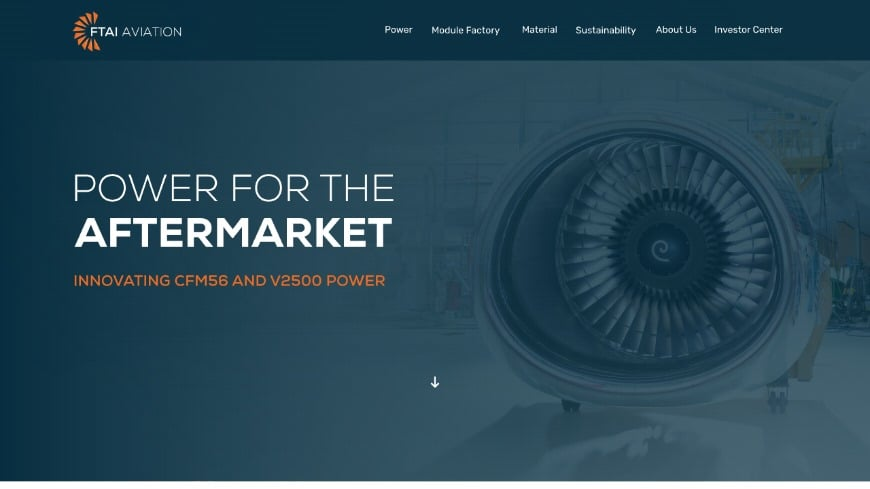

Manufacturing Execution System
Elinext supported an older industrial system, added integrations, and kept support running around the clock.
Read the case studySupport engineering proposal
Saw you are hiring a Customer Support Engineer in Montreal. That role sits between customers, shops, and internal teams, so the need looks clear: keep each engine shop visit visible, current, and easy to explain.

A small Elinext squad works inside your process, with weekly demos and a tight pilot scope.
Elinext supported an older industrial system, added integrations, and kept support running around the clock.
Read the case study
One dedicated engineer helped a cruise operator clear a long backlog in live operational software.
Read the case studyA short call can confirm the right pilot scope.
Start the conversation